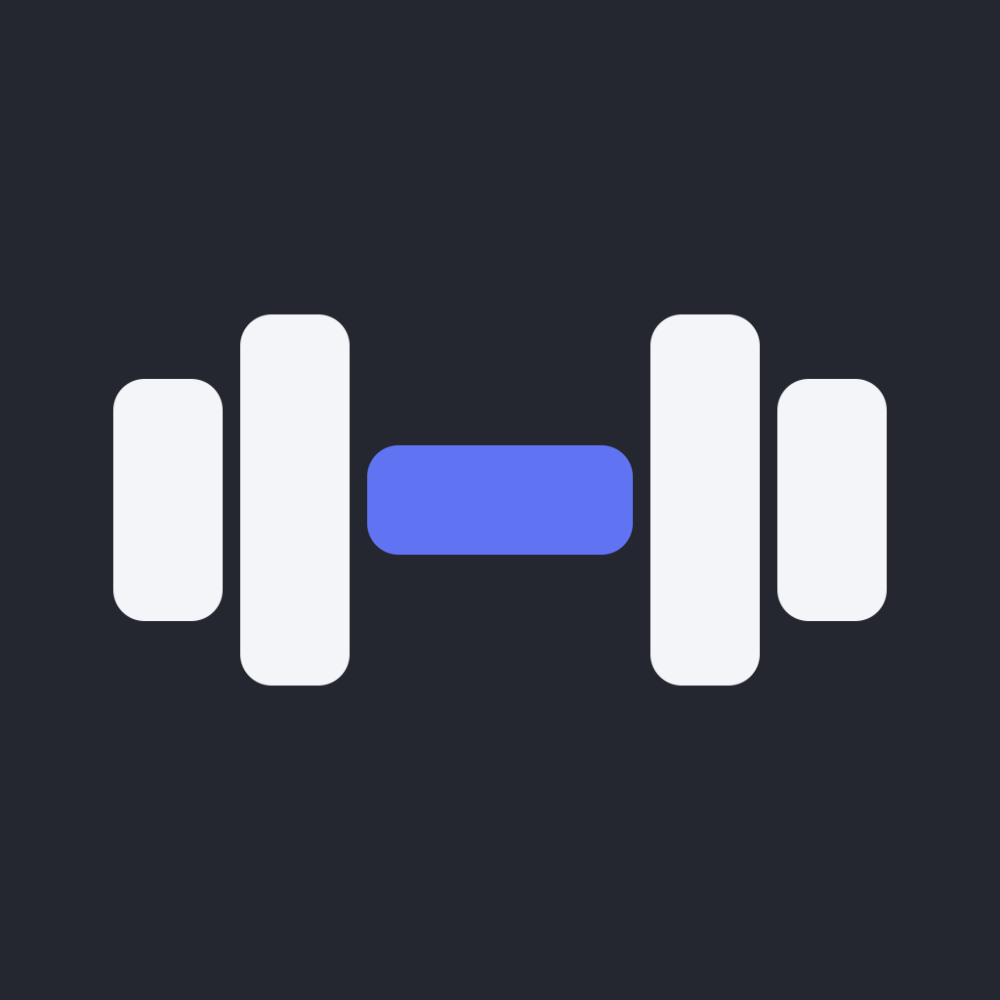

Offline-first state
Core workout data lives locally so the app remains useful without connectivity or an account.
Case study · Live product
A phone-first workout tracker designed around fast logging, durable history, offline ownership, and a clear path from web app to native Android build.

The problem
Fitness Hub began as a replacement for workout trackers that were slow to use, overloaded with features, or dependent on an account and cloud connection.
The product had to stay quick during an actual workout, preserve past sessions even when a program changed, work offline, and remain usable without creating an account.
The product
Users can build one-to-seven-day programs, record successful or failed exercise attempts, carry weights forward, keep setup notes and rest times, and review filtered progress by exercise.
The same React application runs as a responsive website and installable PWA, while Capacitor packages it as an Android app with native haptics, notifications, backups, launch behavior, and update handling.
Engineering
Core workout data lives locally so the app remains useful without connectivity or an account.
Completed workouts stay fixed even when the active program is edited or deleted.
Supabase synchronization is additive rather than a requirement for using the product.
Destructive changes create protected recovery snapshots, alongside explicit import and export tools.
Build configuration separates GitHub Pages paths from Capacitor’s native webview requirements.
Unit tests, responsive browser tests, linting, brand checks, and security checks run before deployment.
What it demonstrates
This project demonstrates product scoping, responsive interface design, domain modeling, offline persistence, cloud synchronization, defensive data handling, native Android integration, automated testing, and continuous delivery.
The web app works immediately; Android installation is available inside the product.